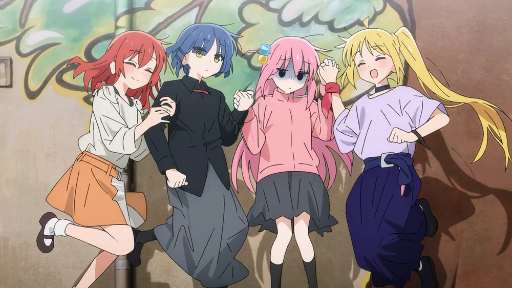

本作で中心に描かれる下北系ロックバンド。郁代曰く「エゴサが全く機能しない」。 虹夏の姉・星歌が店長を務める下北沢のライブハウス「STARRY（スターリー）」を活動拠点としている。
バンド名はリョウによって名付けられ、虹夏は当初「絶対変える」と言っていたが結局そのままになっている。 ライブの物販では実際に結束バンド（ケーブルタイ）をリストバンドと称して販売する。 後にリョウが「けつばんちゃん」というマスコットキャラを作成している。明るく前向きな歌詞にコンプレックスを持つひとりが作詞を担当しているため、歌詞はネガティブなものが多い。 曲の方向性については、作曲担当のリョウのほぼ言いなり状態。